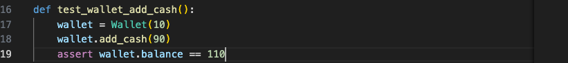
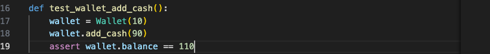

Unit 6: Artefacts
Collaborative Discussion
Although not mentioned specifically, I believe part of this unit's e-portfolio tasks was to respond to at least two of our peers' discussion forum posts.
Peer Post 1
Peer Response 1
Peer Post 2
Peer Response 2
pytest
The next task for this unit was to run pytest on a piece of Python code.
Initial Results
Initially, all pytest tests passed.
Make all tests fail
We were then tasked to ensure all tests fail by altering the code. To do so, I changed the code to look like this:
 

Making these changes gives us the desired result - All tests fail.
Sure, the changes I made to the code were simple - but this demonstrates how effective such test automation can be. Whenever test-driven development is used, code will be developed in order to pass the tests, and each deviation from the expected, no matter how small, will be caught early into the development. This is of utmost importance - I cannot count how many times, in my initial coding career, I developed a piece of code to completion, before testing it fully. This way of working (unfortunately) works sometimes, but other times it results in hours upon hours of code rework. Based on this conclusion, I have changed my way of working a while ago. Now, whenever I code, I incorporate testing as early as possible.